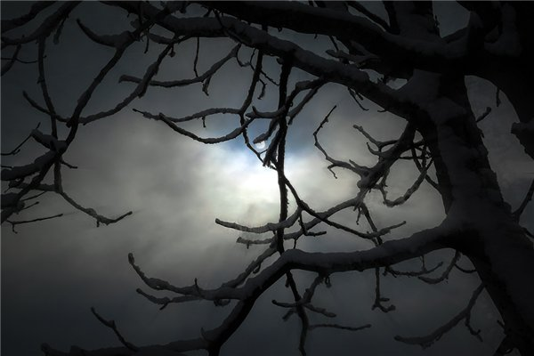

Тайна старого мага
Небо пронзали всполохи ядовито-зеленого цвета. Время от времени к ним добавлялись вспышки нежно-бирюзового, фиолетового и малинового цветов. Будто ветер раздувал по небу цветную пыль. За свою долгую жизнь Ан Найс наблюдал эту картину сотни раз… Но каждый раз она завораживала своей неповторимостью, своими масштабами. Как же мал человек. Старик поплотнее стянул у шеи ворот тяжелой двойной куртки из оленьей шкуры, опустил пониже капюшон, отделанный мехом песца, и еще сильнее сгорбился – морозный ветер кусал за лицо, колол глаза. Он стоял перед небольшим входом в ледяные пещеры, на пути к самой большой тайне его жизни.
Ему уже так много лет, он боялся не успеть. Преемников не было – Ан Найс не доверял никому. Он знал насколько черно его дело. Либо его замыслу суждено осуществиться, либо всё умрет вместе со своим властелином.
Северное сияние постепенно теряло краски и интенсивность. Еще немного… Маг сохранял терпение, он верил, что нужно дождаться завершения, и только потом можно будет заняться своими делами. С возрастом он стал спать намного меньше, урывками, потому ночи практически целиком были в его распоряжении. Когда Крайний замок погружался в сон, ему никто не мог помешать. Слишком сурова эта земля, здесь нет места суете и напрасной трате времени. Здесь главное вовремя поесть, вовремя согреться – постоянная борьба за жизнь среди вечных льдов, снежной равнины, ветреного белого безмолвия и жестоких, безжалостных морозов. Но маг знал, что все может быть иначе, и знал, как это осуществить. Но жизнь сделала из Ан Найса человека черствого, с настолько же черной душой, насколько белым был мир вокруг.
Тем временем небо погрузилось во тьму, то немногое, что дарило северному краю краски, завершило свое представление. Нужно было спешить, времени не так много. Ступив в темноту пещер, старик старался держаться левой стороны стены, и вскоре путь ему преградила дверь из тяжелых медвежьих шкур, надежно придавленных камнями в нише на уровне чуть выше роста мага. Да, когда-то он был молод и силен, сейчас сил едва хватало чтобы отодвинуть тяжелые промерзшие шкуры. Проникнув внутрь, он вскоре различил во тьме слабый свет. Здесь проход уходил влево, а за поворотом на стенах были закреплены факелы. Старый северный олень покорно дожидался своего хозяина. Привязанный кожаным ремнем к металлическому штырю, вбитому в многовековые льды, слепое животное стояло часами. Внизу, у копыт передних ног, лежало немного зерна. Старый олень ел все меньше. Он был уже четверным, и вскоре ему будет нужна замена. Ан Найс небрежно погладил грубую шерсть на шее своего единственного питомца, после чего вынул из-за пазухи флягу с чистой водой. Олень был обучен пить из узкого горлышка и благодарно глотал долгожданную влагу, активно помогая себе языком, стараясь ронять как можно меньше капель. В ледяных пещерах другой воды не было.
После того как олень напился, маг отвязал его и отвел вперед, вглубь пещеры. Неподалеку по правую сторону стояла небольшая деревянная телега. Ан Найс запряг в нее зверя и уселся на сидение в телеге. Внутри скромный транспорт был устлан старыми оленьими шкурами, но они все еще согревали. Олень медленно двинулся по знакомому пути. Животному уже не нужно было что-то говорить, и слепота не могла помешать доставке хозяина в нужное место. Вскоре он по собственной воле перешел на размашистую рысь – пусть был неблизкий.
С годами пол пещеры становился все более гладким, широкие деревянные колеса телеги исправно полировали его десятилетиями… Когда-то маг успевал посещать свои владения по нескольку раз за сутки, теперь же это случалось не каждый день. Он понимал, что его время на исходе. Возможно, если бы знал он что дело его жизни займет столько лет, то не брался бы за него. Зная бы это, тогда, в самом начале, у него не хватило бы духу. Ан Найса радовало только то, что совесть его засыпала все крепче, и он больше не переживал по поводу вершимого им зла. Хотя все еще понимал, что это зло. Но одновременно давал себе право на его совершение.
Тоннель углублялся и уходил вниз, в недра земли. В этом месте воды океана Бесконечности были мелки, узкий проток веками сковывал лед. Но когда-то, задолго до этих времен, все было иначе. Озера текли в полостях пещер, а вокруг все было зеленым… Но природа взбунтовалась, из глубин скалы Страха вырвались нескончаемые потоки обжигающей красной жидкости, которая сожгла всё и всех вокруг. Озера высохли, земля почернела. А позже пришли морозы. Льды и снега навеки сковали некогда процветающий край. Маг знал историю, о тех временах чудом сохранились книги. Бывшие озера стали пещерами, скала Страха остыла и открыла бесчисленные коридоры, разветвляющиеся в разных направлениях. Все пути кроме одного упирались в горную цепь, названную древними Тайной дверью. Потому что одна дверь все же была, и сейчас знал о ней только Ан Найс. В годы своей молодости он потратил годы на поиск прохода, и годы на изучение земель по ту сторону цепи. К своему удивлению он обнаружил что там сохранилось несколько деревень и два замка. Но жители этих земель забыли, что они не одни в этом мире, они не знали, что являются все лишь малой его частью. Старик собирался успеть не только открыть им дорогу к новым горизонтам, но и стать единственными властелином королевства острова Льда. Их Богом.
Телега остановилась, олень чуть повернул голову влево, крупный влажный глаз отражал свет от огня последнего факела. Они прибыли. Это означало что воды замерзшего океана они миновали, и немного впереди находится выход из пещер. Как же много времени потребовалось на то чтобы обнаружить эту, самую короткую дорогу. В нескончаемых ветках пещер можно было плутать годами, любой случайно попавший сюда человек или зверь обрекал себя на скорую смерть. Ан Найс не раз находи трупы несчастных, когда исследовал пещеры. Он никогда не трогал их. И не считал.
Выход из пещер маг назвал Дышло льда. Выход был много шире входа и ничем не укрыт. Здесь не от кого было прятаться. Привязав оленя и заранее развернув тележку в сторону обратного пути, маг вышел на поверхность. Вскоре, как только Дышло льда перестало прикрывать спину, Ан Найс вынужден был наклониться вперед и пригнутся – ветер здесь был заметно сильнее и холоднее. Впереди виднелась огромная дыра в скале Страха, потухшем вулкане – вход в его владения. Старик тяжело переставлял ноги со снегоступами по рыхлому снегу. Метель закончилась, небо было чистым, но погода в скором времени обещала изменится. Низко над головой беззвучно пролетела большая белая сова. Маг часто видел здесь сов, тут у них не было врагов, и он был единственным человеком, какого птицы могли видеть в данной местности.
Подойдя ко входу в недра вулкана, Ан Найс остановился перевести дух. Впереди уже был виден тусклый свет факелов, старательно поддерживаемый магом многие годы. Огонь отгонял диких животных и позволял добраться до нужного места. Здесь помощников не было, потому нужно было собраться с силами. Маг тяжело присел на лежащий рядом камень для того чтобы немного отдохнуть и прожевать кусочек солонины, запивая его остывающей водой из фляги. В это время сова тихо опустилась на торчащий чуть правее входа крупный кусок скалы. Птица внимательно изучала человека слегка прищуренными желтыми глазами, двигая низко опущенной шеей из стороны в сторону. Неожиданный писк лемминга в миг отвлек её, и сова, оттолкнувшись мощными лапами от камня, слегка неуклюже полетела на звук. Ан Найс поднялся, нужно было спешить.
Еще во времена своей молодости он постоянно боялся что лорд Крайнего замка, где он служил большую часть своей жизни, когда-нибудь догадается о страшной тайне. Маг понимал, что его ждет тогда. Эти земли не нуждались в палаче: оставшийся без тепла и пищи человек или зверь замерзал в считанные часы. Лорда большей частью не интересовали дела его подчиненных, и зачастую он не старался разобрать в причинах содеянного. Осужденные отправлялись на мороз без лишней суеты... Единственным способом сохранить свою жизнь было умение молчать и заметать следы – Ан Найс очень давно понял эту истину.
Тишину все более разбавляли невнятные звуки. Создавалось впечатление, что стадо самых разных животных заблудилось в бескрайних лабиринтах опустевших вулканических озер, имевших несколько ярусов, и эта стая, пережив панику, обговаривает план дальнейших действий… Маг приближался к месту, ради которого жил.
В пещере становилось светлее. Открывшаяся картина всегда волновала глаза и душу ее создателя… Маг стоял на входе в огромное округлое помещение, вверху которого, на головокружительной высоте зияло гигантское око древнего вулкана. Внизу же, под узкими перекрытиями из сохранившейся твердой породы спиралью уходили вглубь бесконечные дороги, пещеры, залы, сплошь заполненные его рабами - покорно движущимися в разных направлениях и выполняющими разнообразную работу людьми в шкурах. Многочисленные костры и факелы давали ощутимое тепло. Основным источником пищи служили олени, стадо которых регулярно выгонялось на выпас к востоку от вулкана, среди торчащих крупных камней. Растительности была мало, но неприхотливые северные животные давно приспособились к подобным условиям жизни.
Многим из осужденных маг не дал замерзнуть, делая за них выбор в пользу единственной альтернативы… Согласно особому обычаю приговоренного к смерти поили особым настоем, состав которого был известен только придворному магу. Вскоре после этого человек терял сознание, его связывали и отвозили к склону небольшого холма, с которого и сбрасывали. Катясь вниз, человек с ног до головы покрывался снегом, и у подножия становился практически неотличим от окружающего пейзажа, из-за чего зрелище в миг переставало быть интересным для наблюдавших. Как только толпа рассеивалась и люди возвращались к своим обязательствам, Ан Найс увозил тело к пещерам. Все знали, что это пещеры смерти, проклятое место, где маг провожает замерзших в последний путь. Для этого выбирался иной вход, а просторная телега, запряженная парой молодых оленей могла свободно пройти внутрь, довозя Ан Найса до нужной развилки, за которой, в более узком коридоре, находилась его личная тележка. Практически замерзшее тело спешно увозилось в центр пещер, в место под замерзшим океаном. Округлая площадка освещалась сразу шестью большими факелами, дающими достаточно тепла. Специальным противоядием осужденный возвращался к подобию жизни. Это получалось не всегда, все зависело о крепости организма и возраста человека. Промерзшее тело и действие противоядия, постоянно добавляемого в скудную пищу, делало человека истинным рабом: без вопросов, без слов, без возражений человек на всю оставшуюся жизнь слепо выполнял любое указание своего властелина. Без отдыха, без усталости, без остановки: зомби не знают таких понятий.



Автор: Avostadea.
(специально для vampirecommunity.ru)
[Наверх]